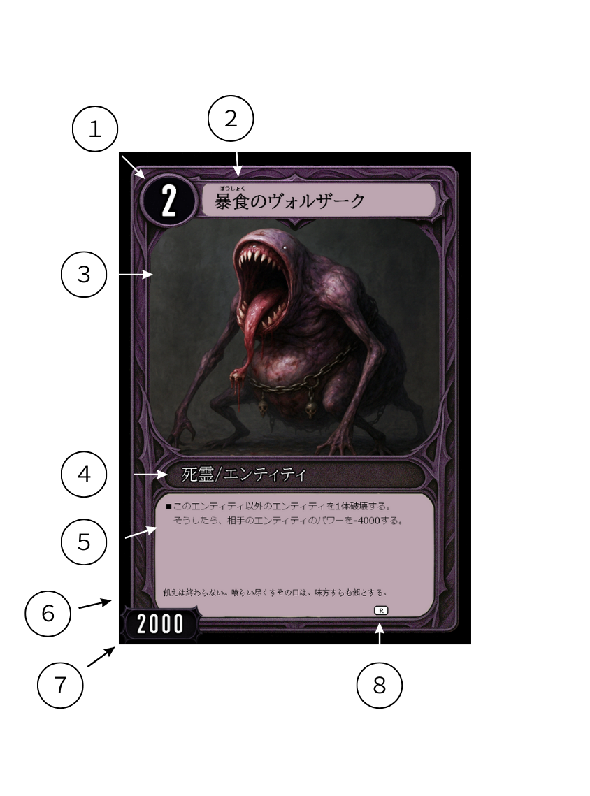
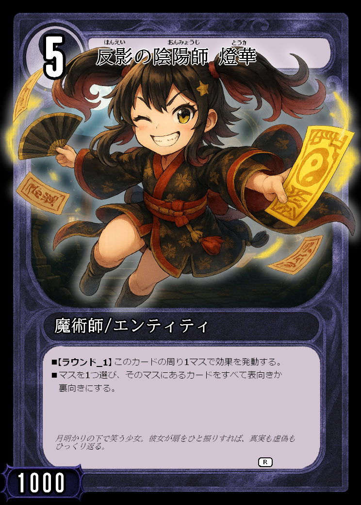
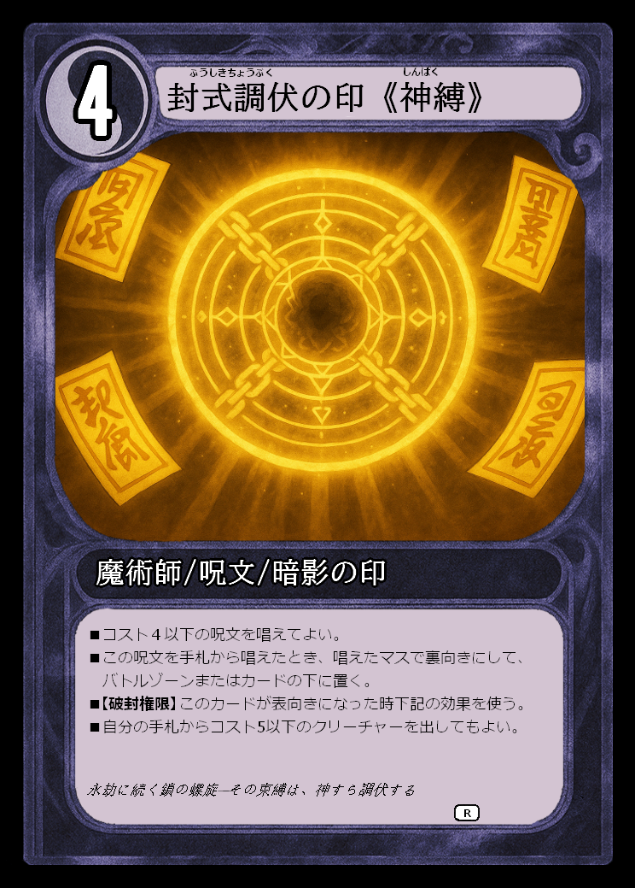
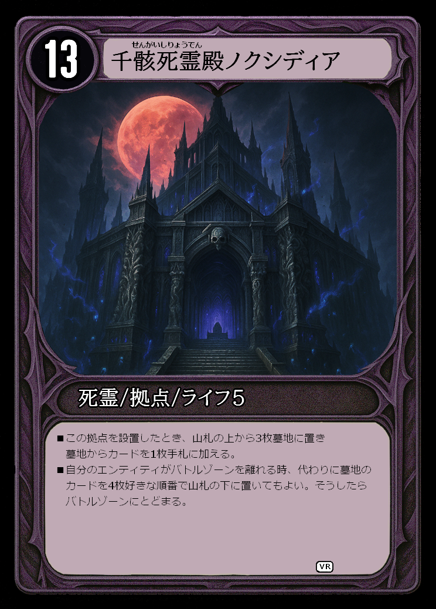

勝利条件
相手の拠点をすべて破壊すること、または相手の山札が0枚になること。
フィールドと用語
- バトルゾーン： 4×5 のマスでエンティティを配置し移動させます。
- リソースゾーン： コストを支払うためのカードを置く場所です。
- 山札・墓地・手札： 一般的なTCGと同様の扱いです。
ゲームの準備
- 各プレイヤーは同名カード4枚までで40 枚のデッキを用意し、1枚拠点カードを選んでからそれ以外のカードをシャッフルします。
- 先攻後攻を決めます（じゃんけん等）。
- 各自、手札を 5 枚引きます。
- 各自、先攻後攻の順番で前列の好きなマスに表向きで拠点カードを配置します。拠点カードの下には、そのライフと同じ枚数山札の上から裏向きのまま下に置きます。
拠点の置き方について
前列（自分側から見て最も近い列）ならどのマスでもOK。
ターン進行
- ターン開始：リソースゾーンのカードをアンタップ（縦向きに戻す）・ドロー。
- 補給フェイズ：手札から1枚をリソースゾーンへ（任意）。
- 使用フェーズ：コストを支払い、エンティティや呪文を使用。
- 移動フェーズ：エンティティを移動。相手を攻撃します。
- 終了：ターン終了時の効果を解決。
移動と攻撃
- エンティティは自分の移動フェーズ中に、各カードにつき1回移動・攻撃できます。
- カードは移動能力の記述がない場合王将のようにそのカードの周りのマスどこでも移動できます。
- カードには特殊な移動能力（例：飛車・角）を持つ場合があります。
- 攻撃は隣接または移動可能範囲の敵エンティティまたは拠点カードへ行う。
- エンティティ同士でバトルをする場合、パワーの小さいほうが墓地に送られる。同じパワーならばどちらも墓地に送られる。
- 相手拠点に攻撃する場合相手は拠点の下から1枚カードを手札に加える。
カード解説

- コスト：カードを使用するために必要な数値です。
- カード名：カードの名称です。
- イラスト：カードのイラストです。
- カード種類：左から順にファミリア、カードの種類、種族の順で書かれています。
- 効果テキスト：カードの能力が記載されています。
- フレーバーテキスト：ゲームに影響しない装飾的な文章です。
- パワー：戦闘などで参照する数値です。
- レアリティ：カードの希少性を示します。
カードの種類
本ゲームのカードは大きく エンティティ / 呪文 / 拠点 の3種類に分類されます。
共通事項： すべてのカードは「コスト」を持ち、縦向きのソースゾーンのカードをコストの数字分タップ（横向きに）することで使用できます。

1) エンティティ
- 役割： 盤面に出して移動・攻撃を行うカード。
- 出し方： カード使用フェーズ中にコストを支払い、拠点のある前後と拠点のある列の中のどこかのマスへ配置します。
- 移動： 基本は各カードにつきターンに1回。出たターンに移動できる。（途中に相手のカードがあるマスは通過不可。自分のカードであれば通過可能）。
- 戦闘： 移動時に隣接または効果で指定された範囲に相手のエンティティもしくは、相手の拠点があれば攻撃。勝敗はパワーで決定します。
- パワーアップ： エンティティは同じマスに出すことはできないが、同じマスに移動することができる。そして同じマスにいるエンティティのパワーは合計する。また同じマスに同時に移動することができ、この場合もそれぞれのパワーを合計することができます。

2) 呪文
- 役割： 一時的な効果を発生させる使い切りカード（除去・ドローなど）。
- 使い方： カード使用フェーズ中にコストを支払い、使用するマスを決めてそのマスからの効果範囲をもとにしてテキストを解決して墓地へ。
- タイミング： 基本は自分のカード使用フェーズ中のみ。
- 対象： 指定の「カード/ マス / プレイヤー」など。

3) 拠点
- 役割： 各プレイヤーが前列に配置する拠点。バトルゾーンにある拠点と同じファミリアのカードのみ手札からコストを支払って使用できる。
- ライフ 拠点ごとに指定されたいわば体力。設置時にライフの数字分カードを山札の上から裏向きのまま拠点の下に置く。
- 配置： ゲーム準備時にデッキから1枚選んで前列の好きなマスに置きます。
用語集
よくある質問
拠点は複数置けますか？
はい。ゲーム開始前に置けるのは1枚ですがゲーム開始後手札からコストを払って設置することができます。
先攻は初手ドローしますか？
先攻はドローしません。
エンティティは出たターン移動できますか？
できます。
エンティティは重ねられるとありますが、それはひとつのエンティティとなるのでしょうか？
同じマスに2体のエンティティがいる場合、そのマスのパワーは2体のパワーの合計値として扱います。それぞれは独立したエンティティとして存在し、各自の能力を使用できます。
移動フェーズでのカードの移動は複数同時が可能でしょうか？
できます。同じマスに移動する場合に限り、複数のエンティティを同時に移動させることができます。このとき、そのマスのパワーは移動したエンティティの合計値として扱い、相手エンティティと戦えます。ただし、各エンティティは独立して存在し、それぞれの能力を使用できます。
各エンティティの攻撃権は１回として、重なっているエンティティはその枚数分攻撃可能か？
できます。1つのエンティティとしてカウントするので枚数分攻撃できます。
「召喚」と「出す」と「使う」はそれぞれ別の認識でよいですか？
はい、それぞれ異なる意味を持ちます。「召喚」はエンティティを場に出す行為を指し、「出す」はカードをバトルゾーンに出す行為全般を指します。「使う」はバトルゾーンに出す行為や呪文を唱える行為などカードを使うこと全般を指します。
重ねて同時移動が可能かつそれぞれの効果が有効ということは、どちらかのみ【香車】等を持つ場合は２マス移動できるという認識でよいですか？
いいえ。重なっているカードはパワーのみ合計した別のエンティティとして扱うので【香車】を持たないカードは2マス移動できません。
各エンティティの移動権は１回として、重ねてさらに移動は可能か？
できません。各カードにつき移動は1回までです。